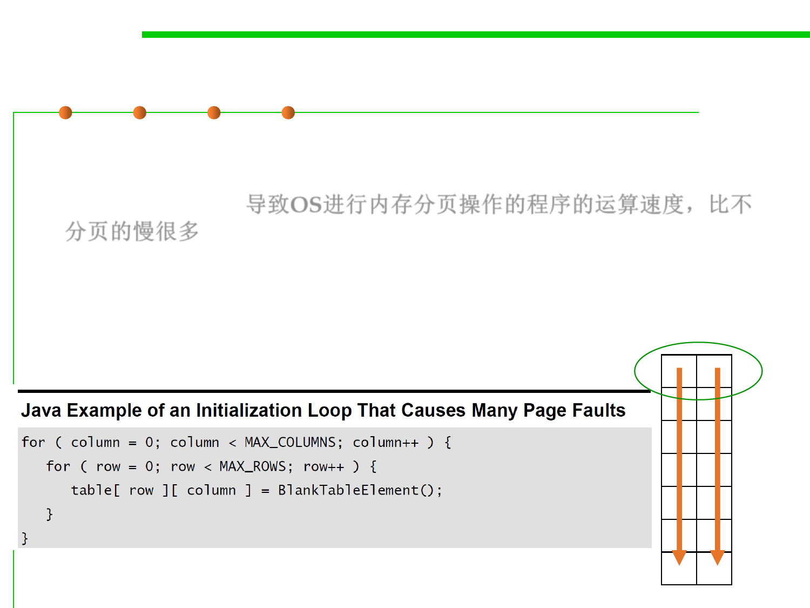

(2) Paging 分页
8.3 Code Tuning for Performance Optimization
▪ An operation that causes the operating system to swap pages of
memory is much slower than an operation that works on only one
page of memory. 导致OS进行内存分页操作的程序的运算速度，比不
分页的慢很多
▪ Sometimes a simple change makes a huge difference.
▪ E.g., one programmer wrote an initialization loop that produced
many page faults on a system that used 4K pages.
4K
It switches rows MAX_ROWS * MAX_COLUMNS times.